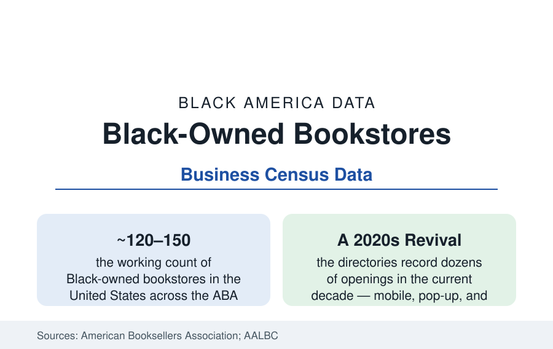

Black Business
Black-Owned Bookstores: The Cornerstone Retail of Black Letters
Roughly 120–150 Black-owned bookstores operate in the United States — the movement-era institutions and a new generation of owner-curators. The census of a literary retail sector.

The Black-owned bookstore is the smallest retail sector in this atlas and among the most consequential: at any given time roughly 120–150 such stores operate in the United States by the bookseller directories' counts — down from several hundred in the movement-era peak the historians record, and rising again in the current decade's revival. They are bookstores the way the Black church is a building: retail on the front, and behind it the lecture hall, the organizing room, the children's story hour, and the archive of a literature the general market stocked last. This article counts the sector and reads its economics.
The Institutions: A Directory of Survivors
The legacy file is a roll of names the culture knows: Marcus Books in Oakland and San Francisco (founded 1960, the oldest Black-owned bookstore in the country in the standard accounts, survivor of displacement fights its city joined), Eso Won in Los Angeles (1988, the literary salon of Leimert Park), Sankofa in Washington (1998, named for the film its owners made), the African American Literature Book Club's retail constellation, Hakim's in Philadelphia (1959), Underground Books in Sacramento, The Dock in Fort Worth (among the largest by floor space), Source of Knowledge in Newark, and the Schomburg's shop in Harlem — each a small business and a civic utility in its city's data. The ownership data (the Annual Business Survey's retail slice) put Black-owned book and media retail in the low hundreds of employer firms nationally, with the sector's center of gravity in nonemployer and micro-employer operations — stores run by an owner, a family, and a community's volunteer energy, in the pattern the funeral-home article records for the other cornerstone trade.
The Economics of a Mission Retail
The sector's economics are the independent-bookstore economics with an added mission load: thin margins on the trade's standard terms (the 40-percent wholesale discount the chains' scale historically beat), the showroom problem of the platform era (discovery in the store, purchase at the discount online — the browser-to-warehouse leak every indie fights), and the compensating assets the Black bookstore holds in unusual strength: curation as expertise (the owner's hand-selling of a literature the algorithms surface poorly), the event economy (author appearances, book clubs, school and church bulk orders — the institutional sales channel the education file's districts represent), and the community's willingness, in the current decade's data, to treat the store as a cause — the 2020 surge in the sector's sales and waitlists was measured nationally when reading lists drove demand to exactly these shelves. The fragilities are equally documented: commercial rent in the gentrifying districts where the legacy stores sit, succession (several famous stores' futures hinging on a founder's family or a community buyout in the current record), and the capital file — the financing-access article's general pattern, at bookstore scale.
The Revival Generation
The directories' newest entries redraw the format map: the current decade has added dozens of Black-owned bookstores — brick-and-mortar openings in cities that had lost theirs (the revival stores of the Midwest and South in the ABA's new-member data), mobile bookstores and book-bikes, pop-up and market-stall models that test a neighborhood before signing a lease, online-first stores with local delivery, and bookstore-café and bookstore-bar hybrids borrowing the hospitality margin to carry the book margin. The children's segment leads conspicuously (stores founded by educators and parents around Black children's literature — the representation file of the publishing data, where the Cooperative Children's Book Center's counts of books by and about Black creators have climbed from their historic lows). The sector's professionalization shows in the trade's own institutions: the Black booksellers' caucuses and list-servs, the collective marketing campaigns, and the publisher-side programs (dedicated Black-bookstore outreach and terms at several houses) that treat the sector as the channel it has always been — the place where Black books are not a section but the store.
Reading the Bookstore Data
One hundred and fifty stores is a rounding error in American retail and a load-bearing wall in Black letters: these are the rooms where the new novelist first reads, where the reading lists become purchases, where a child's name gets spelled by someone who knows it. The census of the sector says the wall thinned for a generation and is being rebuilt — by owners who did the math, saw the margins, and opened anyway, because the other ledger balanced.
More in Black Business
Black-Owned Businesses: Counts, Receipts, and the Representation Gap
About 161,000 Black-owned employer firms and three million solo ventures: how the Census Bureau counts Black business ownership, where firms concentrate, and the gap between population share and business share.
Black Median Net Worth: The Wealth Gap in Federal Reserve Data
The Federal Reserve puts Black median family net worth at $44,900, against $285,000 for White families — about 16 cents on the dollar. The widest gap in economic data.
Black Buying Power: The $1.8 Trillion Consumer Economy
Black buying power is estimated at about $1.8 trillion — larger than the economy of most nations. What the figure measures, who produces it, and what it buys.
Source: American Booksellers Association directories; African American Literature Book Club listings; U.S. Census Bureau Annual Business Survey; industry histories of Black bookselling.